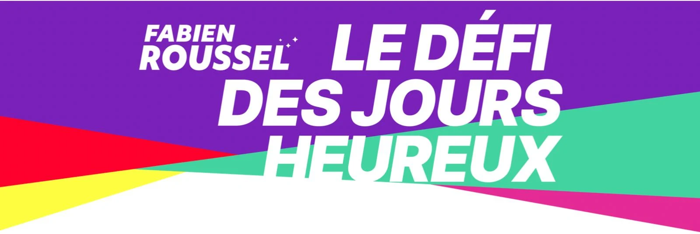

Publication d’archives
Dimanche 10 avril 2022, rappelons-nous qu'il n'y a pas de vote inutile !
Date indiquée par Facebook · 7 avril 2022
Texte conservé avec la publication
Contexte du dossier
Avant le 10 avril, deux publications défendent le vote Fabien Roussel contre l’injonction au « vote utile ». Elles refusent l’idée que les électeurs d’autres candidatures de gauche seraient, par ce choix, des soutiens indirects à Macron ou Le Pen. Le vote est présenté comme expression d’idées, pas comme mesure de l’utilité d’un citoyen.
Après le premier tour, le billet du 14 avril appelle à examiner abstention et niveau global de la gauche. Il reproduit une réflexion attribuée à Mickaël Wilmart comparant plusieurs présidentielles depuis 1981. L’auteur y soutient que le nombre de candidatures n’explique pas, à lui seul, les défaites et demande de reconstruire des liens entre électorats. Cette lecture et ses regroupements statistiques restent ceux du texte repris. Elle élargit la question : pour gagner, la gauche doit aussi convaincre au-delà de ses frontières récentes.

Sources
Archive rouge · export Facebook · AR-0002-FB-01905
À lire aussi · Septembre 2022 : le débat public ne se décrète pas d’en haut